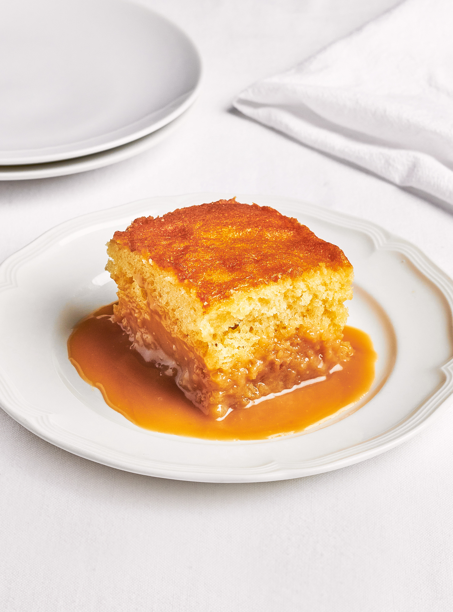

Pouding Chomeur Recipe

Lien vers la recette originale
Description
This is the "Chef Cuisto" Pouding Chomeur Recipe
La fameuse recette de Pouding Chomeur de nos grand-maman!
Ingredients
- 1 1/2 tasse (375 ml) de farine
- 1 cuillere a the de poudre a pate
- 1/4 de tasse (65ml) de beurre
- 2/3 de tasse (165 ml) de sucre
- 1 oeuf
- 1 cuillere d'extrait de vanille
- 1/2 tasse de lait
Steps
- Prechauffer le four a 325 F
- Melanger la farine et la poudre a pate
- Dans un bol, battre le beurre en creme en ajoutant le sucre
graduellement
- ...
- Cuire au four pendant 45 min
- Deguster!